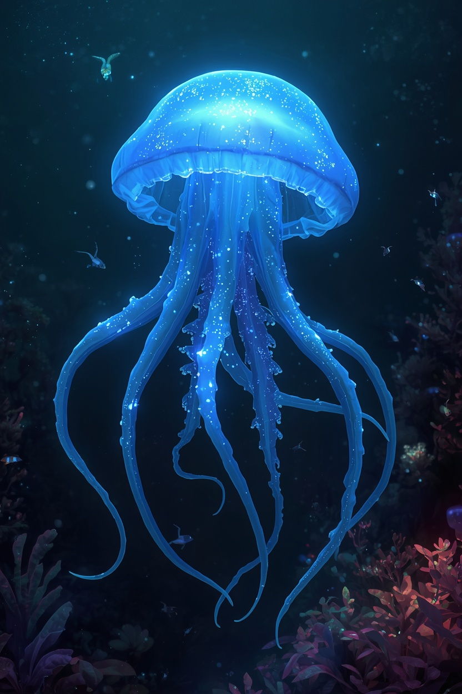

CATÁLOGO DE VIDA · GALATEA
La vida de GALATEA
En cada mundo, la vida ha encontrado una forma diferente de existir. Descubre las especies que habitan GALATEA.
Explorar especiesUN UNIVERSO LLENO DE VIDA
No estamos solos
Los mundos de GALATEA no están vacíos. Cada planeta alberga sus propios ecosistemas, criaturas y especies.
Las especies que conocemos son solo una pequeña parte de la biodiversidad que existe en GALATEA.
LUMIA
Lumienses
Gigantes inteligentes de los océanos bioluminiscentes. Una especie social que percibe su entorno sin ojos y utiliza la luz y el sonido para comunicarse.


ALIMENTACIÓN
Otros organismos bioluminiscentes
COMUNICACIÓN
Luz y sonido
REPRODUCCIÓN
Ovípara
SOCIEDAD
Altamente social
KRYNAR
Krynerios
Habitantes de un mundo de desiertos extremos, exploradores y guardianes del conocimiento.
KRYNAR
Próximamente
Estamos descubriendo las especies que habitan los desiertos de Krynar.
LAYEN
Layenses
Una especie inteligente que considera que no vive en la naturaleza, sino que forma parte de ella.
LAYEN
Próximamente
Estamos descubriendo la vida integrada en los ecosistemas de Layen.
PORTHA
Portenses
Habitantes de montañas y cavernas que utilizan las vibraciones de la roca para comunicarse.
PORTHA
Próximamente
Estamos descubriendo la vida que habita las montañas y cavernas de Portha.
AÚN QUEDA MUCHO POR DESCUBRIR
Una especie es solo el principio
Los Lumienses no son toda la vida de Lumia. Los Krynerios no son toda la vida de Krynar. Los Layenses no son toda la vida de Layen. Los Portenses no son toda la vida de Portha.
Cada mundo alberga innumerables formas de vida que todavía no conocemos.
CATÁLOGO DE ESPECIES · EN EXPANSIÓN